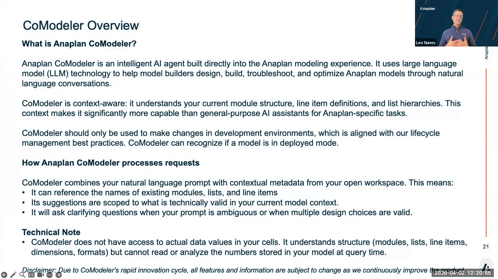
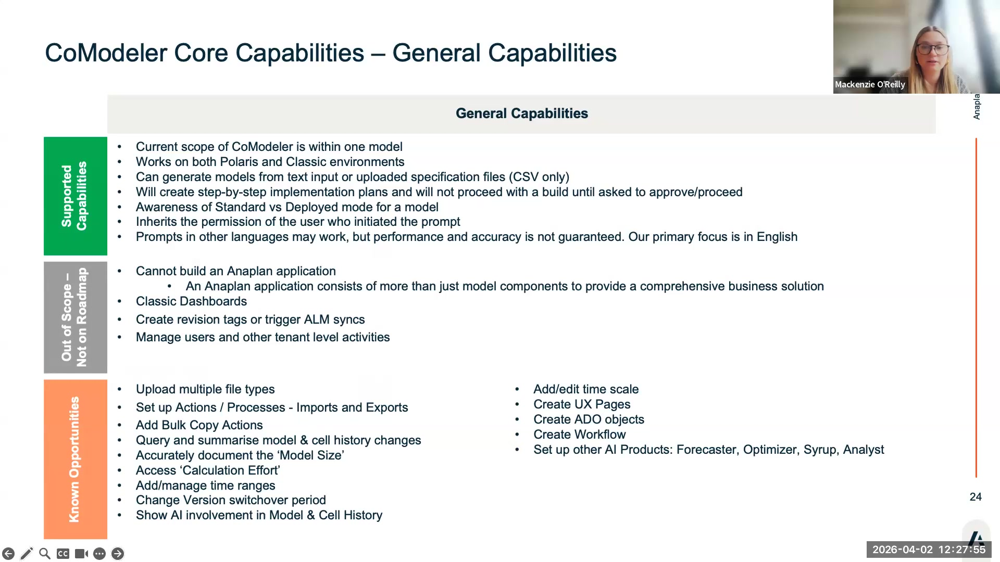
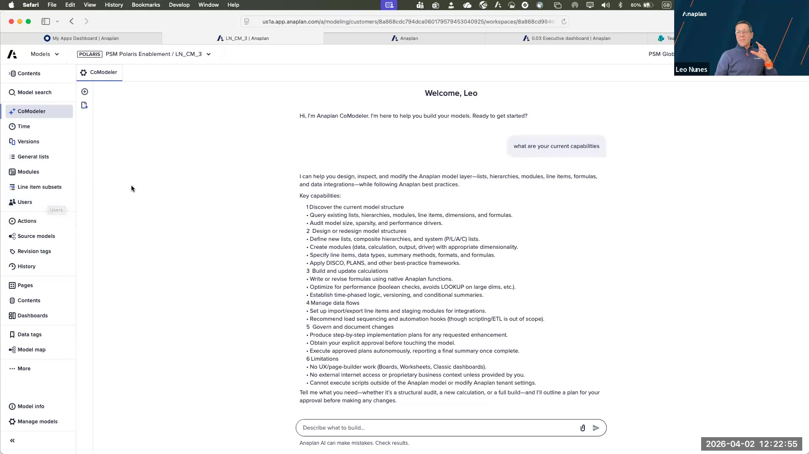
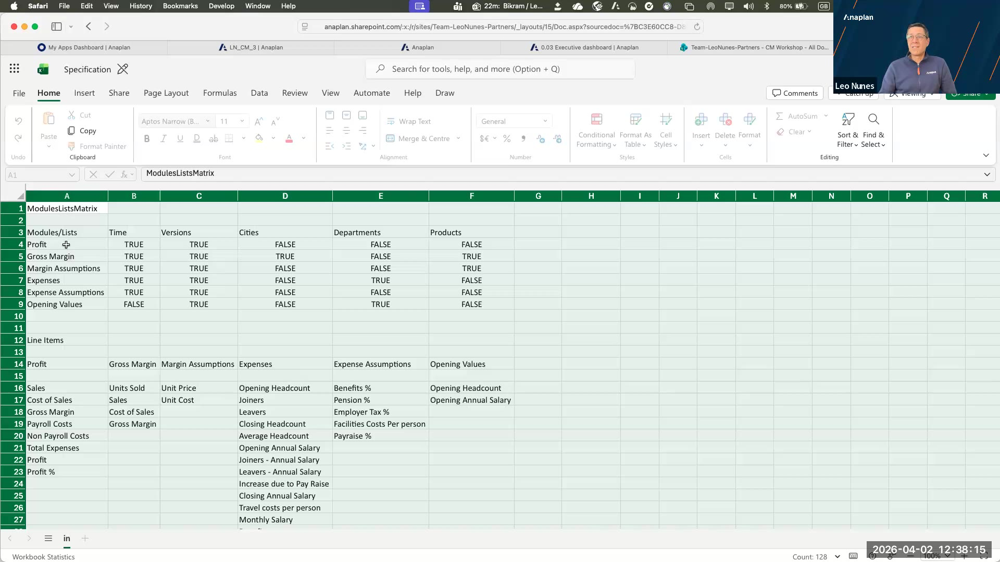
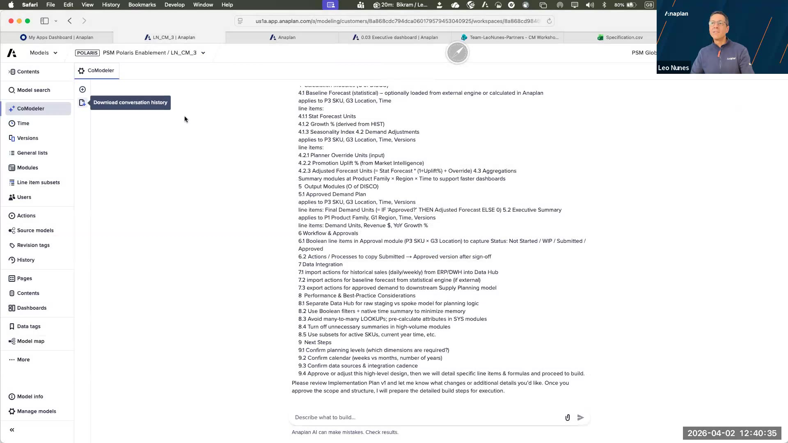

CoModeler Deep-Dive + Labs
Capabilities, limitations, prompting best practices + Labs 2A, 2B, 2C
What CoModeler Is
CoModeler is Anaplan's AI-powered model-building assistant. Leo's definition from the session: "A very junior model builder that knows a lot." It has deep business context (trained on the internet), knows Anaplan well (fine-tuned on Anapedia and plan content), but requires supervision — especially on complex models.
It lives inside a model. It cannot interact with anything outside the model: no tenant management, no user management, no UX, no ADO, no workflow.

CoModeler Overview — what it is, how it processes requests, key limitations (session slide 21)
Who CoModeler Is For
| User Type | Primary Value |
|---|---|
| Expert model builders / SAs | Productivity accelerator. Automates bulk repetitive tasks: rename conventions, bulk create, documentation at scale. |
| Core model builders | Intelligent assistant for daily work. Helps structure modules, suggests formulas, documents as you build. |
| New builders / business SMEs | Onboarding and enablement tool. "Where do I even start?" — ask CoModeler to propose the design, then review it. |
| Application extenders | Extend Polaris / OOB apps. Always tell it the application context explicitly so it follows the right conventions. |
Capabilities
| Capability | Strength | Notes |
|---|---|---|
| Build new models from scratch | Strong | Can generate modules, lists, line items from a prompt or spec file. Not perfect — check output. |
| Bulk rename / bulk edit | Very strong | Experts love this. Rename all line items on a module, change naming conventions across a model. |
| Document a model | Strongest capability | Line item dictionaries, notes on line items, exportable documentation. Consistent wow factor in demos. |
| Model health check | Moderate | Identifies unused modules/line items, best-practice issues. Points you to problems; doesn't fix them. |
| Extend application models | Moderate (with guidance) | Works better when you provide context (e.g. "this is a Polaris model — use Polaris best practices"). |
| Formula optimization suggestions | Limited | Can suggest improvements but cannot make the change itself yet. |
| Data import setup | Partial | Can read a CSV, set up import action. Cannot execute the import. |
| Fix broken formulas | Weak | Better to build rev 02 of a module with corrections than ask it to fix rev 01. |

CoModeler capabilities matrix from Leo's session — green = supported, amber = out of scope, orange = known opportunities (slide 24)
Limitations
| Cannot Do | Why It Matters |
|---|---|
| Work on deployed models | Standard model only. Always check model status before using CoModeler. |
| Classic dashboards | No UX work. Pages, grids, charts — all out of scope. |
| ALM (Application Lifecycle Management) | Cannot push changes through ALM pipeline. |
| User / tenant management | Completely out of scope. Anything outside the model. |
| Change calendar / time ranges | Time settings are immutable from CoModeler. |
| Import data (execute) | Can set up the import action; cannot run it. |
| Bulk copy actions | Cannot create or manage action sets. |
| Count cells / sum values | Poor at math/aggregation within conversations. |
| Read conversation history | No memory across sessions. Start fresh each time. |
| Interact with other AI products | CoModeler and Custom Analyst do not communicate. |
| Work across multiple models simultaneously | One model, one context window. |
CoModeler will attempt delete operations when asked, but often fails silently if there are dependencies. It always asks you to approve before acting — but it does not always detect dependency chains before prompting. Always verify after any delete request.
Prompting Best Practices
CoModeler is not chatty like ChatGPT. It thrives on precision, not conversation.
Be Specific and Actionable
- Weak: "I need help with my budget model"
- Strong: "In module REV-01, create 5 new line items: [names], all summing parent SUM-REV, formatted as currency, two decimals"
Use the Spec File Pattern
A spec file is a CSV that describes what you want built — your requirements in a structured format before asking CoModeler to execute. Columns typically include: module name, list dimensions, line item names, format, formula skeleton.
Upload the CSV, then write a short prompt: "Using the attached spec file, create the modules and line items described. Use these naming conventions: [your standard]." This consistently outperforms plain text prompts for model-building tasks.
Context Injection (for Application Models)
CoModeler cannot distinguish a Polaris app model from a custom-built model. When working on application extensions, explicitly tell it:
- "This is an Anaplan Polaris model — please follow Polaris best practices"
- "This model uses the [app name] naming convention: [describe it]"
Parallel Tabs
Expert builders open multiple CoModeler tabs. While one is "thinking" (can take 3–5 minutes for large tasks), they work in another module via a second tab. Treat it like co-authoring with a colleague.
Context Window — ~5 Interactions
Keep conversations to ~5 interactions. Beyond that, CoModeler loses earlier context. If a conversation goes sideways or hallucinates, start a new one — there is no recovering from a hallucination loop within the same conversation.
Prompt Library
Leo shared a prompt library in the partner folder. Key prompts from the session:
"Review this model for health issues. Identify: (1) modules with no downstream references, (2) line items that are never used in formulas, (3) any modules that appear to be orphaned. Present findings as a list with module name and issue type."
"Generate a complete line item dictionary for module [MODULE NAME]. For each line item include: name, format, applies to dimensions, formula (if any), and a plain English description of what it represents in a [BUSINESS CONTEXT] planning model."
"In module [MODULE NAME], rename all line items to match this naming convention: [CONVENTION]. Here are the current names and their intended new names: [LIST]. Apply all renames."
"Create a new module called [NAME] dimensioned by [LIST1] × [LIST2] × Time. Add the following line items: [LIST with formats]. This module will [PURPOSE]. Use best practices for module layout."
LLM Roadmap
CoModeler currently runs on ChatGPT 4.0. The upgrade to Claude is targeted for H2 2026 (treat this as December 31, 2026 until Anaplan announces a specific date). The new model will enable:
- Better ability to distinguish application models from custom builds
- Persistent prompt notepad (save prompts inside CoModeler)
- Model Optimizer capability (suggest and apply formula improvements)
🖥️ Show — CoModeler Live Walkthrough
This section walks through what participants will see on screen during the facilitated demo. Every screen they encounter in the labs appears here first so they know where to look and what to expect.
Show 1: Opening CoModeler in a Model
CoModeler lives inside a model — accessed via the left navigation panel. You'll see it listed alongside Contents, Modules, Lists, etc. Click it to open the chat panel on the right side of the screen.

CoModeler open inside the PSM Polaris Enablement model. Left nav shows CoModeler selected; right panel shows the welcome screen with capability categories and the chat input field at the bottom.
The welcome screen lists CoModeler's six capability areas: Discover model structure, Design/redesign structures, Build/update calculations, Manage data flows, Govern/document changes, and Limitations. The disclaimer at the bottom — "Anaplan AI can make mistakes. Check results." — is not optional fine print: it is the working principle for everything in these labs.
Show 2: The Spec File
For Lab 2B, participants will create and upload a spec file. Show them what a well-formed spec file looks like. Leo's example is a NovaTrend-style P&L model with modules, dimensions (Versions, Time, Cities, Departments, Products), and line items.

Example spec file open in Excel/SharePoint. Top section: ModulesListsMatrix showing which dimensions apply to each module. Bottom section: detailed line item definitions per module with names, formats, and relationships. This is the input participants will create for Lab 2B.
Point out the structure: modules as rows in the matrix, dimensions as columns. The line items section below maps back to each module. CoModeler reads both sections when you upload this file. The more precise your spec, the less correction you'll need post-build.
Show 3: CoModeler Output — Planning Response
After submitting a build or documentation prompt, CoModeler returns a structured response in the chat. For a documentation or planning request, it generates a multi-section response covering module structure, data flows, and best-practice considerations — with a Download button to export the full conversation.

CoModeler output for a demand planning model documentation request. The response covers baseline forecast modules, calculation modules, output modules (DISCO methodology), workflow and approvals, and performance considerations. The "Download conversation history" button at the top right is used in Lab 2C.
The "Download conversation history" button exports the full conversation as a file. This is the output participants will review in Lab 2C. Point out the disclaimer at the bottom: CoModeler may suggest things that don't exist yet in the model or that don't apply — always validate the output before handing it to a client.
Lab 2A — First Conversation with CoModeler
Objective: Open CoModeler in a real model and produce a line item dictionary for one module.
Before You Start
- You need access to an Anaplan model — must be a standard (non-deployed) model.
- CoModeler must be enabled for your workspace. If you don't see it in the left nav, see Step 3 below.
Steps
- Log in to Anaplan and open your model.
- In the left navigation panel, scroll down to find CoModeler and click it. The CoModeler chat panel opens on the right.
- If CoModeler is not visible: your tenant admin needs to enable it for your workspace via Agent Studio → CoModeler tab → Add workspace. (See Lab 3A.)
- You should see the welcome screen: "Hi, I'm Anaplan CoModeler. I'm here to help you build your models."
- Click NEW CONVERSATION.
- In the chat input at the bottom, type:
"What is this model about? List the modules you can see and describe the purpose of each in one sentence." - Wait for the response. CoModeler is reading the model structure in real-time — this may take 1–3 minutes on a larger model.
- Review the output. Then type a follow-up prompt:
"Generate a line item dictionary for the module with the most line items. Include: name, format, dimensions, and a plain English description of what it represents in a planning model." - When the response appears, click the Download conversation history button (top right of the chat panel). Save the file — you will use this in Lab 3B.
Step 2: CoModeler in the left navigation (highlighted). The welcome panel appears on the right — click NEW CONVERSATION to begin.
Debrief Questions
- How long did CoModeler take to respond to each prompt?
- Did the line item descriptions make sense for the business context? Did any seem hallucinated?
- What module did it identify as the most complex? Does that match your expectation?
Lab 2B — Spec File Build
Objective: Create a CSV spec file for a simple NovaTrend revenue module and use CoModeler to build it.
Before You Start
You'll create a small spec file, then upload it to CoModeler. Refer to the Show section above to see what a well-formed spec looks like.
Steps
- Open a spreadsheet (Excel, Google Sheets, or a text editor) and create a CSV file with these columns:
Module, Dimension1, Dimension2, LineItem, Format, Formula, Description - Add 3–5 rows for a simple NovaTrend Revenue Actuals module. Use:
- Dimension1: NovaTrend Regions (e.g. North America, EMEA, APAC)
- Dimension2: Products (e.g. Nutzo Bar, Cookie Crumbs, CooCoolicious)
- LineItems: e.g. Revenue, Units Sold, Average Selling Price, Gross Margin
- Save as
novatrend-revenue-spec.csv. - In CoModeler, click NEW CONVERSATION.
- Use the attachment icon in the chat input to upload your CSV file.
- After attaching, type this prompt:
"Using the attached spec file, create the module and line items described. Apply standard Anaplan naming conventions. This is a consumer goods revenue model." - CoModeler will present a build plan. Review each step before approving — it will ask for approval before making changes.
- Approve the steps. After it completes, ask:
"Add a description note to each line item you just created explaining its purpose in a consumer goods revenue planning context." - Go to the model (open a new browser tab if needed) and verify the module was created correctly.
Steps 1–3: Your spec file should follow this structure. Top: a modules-dimensions matrix (which dimensions apply to each module). Bottom: line items per module with names, formats, and descriptions. CoModeler reads the full file before responding.
Debrief Questions
- Did CoModeler follow the spec exactly? What did it get right or wrong?
- How did the description notes compare to what you would have written manually?
- What would you change in the spec file format to get better output?
Lab 2C — Documentation & Model Health
Objective: Use CoModeler to generate exportable model documentation and run a health check.
Steps
- In CoModeler, click NEW CONVERSATION.
- Type this health check prompt:
"Run a model health check. Identify any modules with no downstream references, unused line items, or orphaned lists. Present as a prioritized list." - Review the output. Note any issues flagged. Some may be false positives — CoModeler does not always have full context about deliberate design choices.
- Next, type:
"Generate documentation for this entire model. For each module, include: purpose, dimensions, key line items, and how it connects to other modules. Format for export." - When the response completes, click Download conversation history (top right of the chat panel).
- Open the exported file and review quality. This is what you would hand a new model builder joining the project.
- Optional: Paste the documentation text into ChatGPT or Claude and ask it to enrich the descriptions for a non-technical business user. Compare the two versions.
Steps 4–5: CoModeler generates a multi-section structured response covering module purposes, data flow, and methodology. The Download conversation history button (top right of chat panel) exports the full output. This exported file is the artifact you'll use in Lab 3B to seed the Custom Analyst configuration.
Save the exported documentation. In Lab 3B you'll paste the line item descriptions into your Custom Analyst configuration as semantic definitions. The workflow: CoModeler generates raw descriptions → ChatGPT/Claude enriches them for business language → paste into Agent Studio. This is the workflow Leo demonstrated in the session.
Debrief Questions
- What health issues did CoModeler find? Were they real issues or false positives?
- How complete was the documentation? Would you trust it without a manual review?
- How long would this documentation have taken to produce manually?